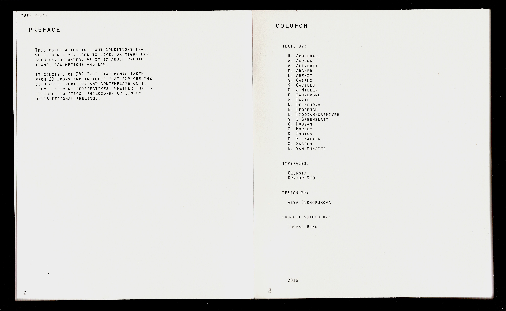
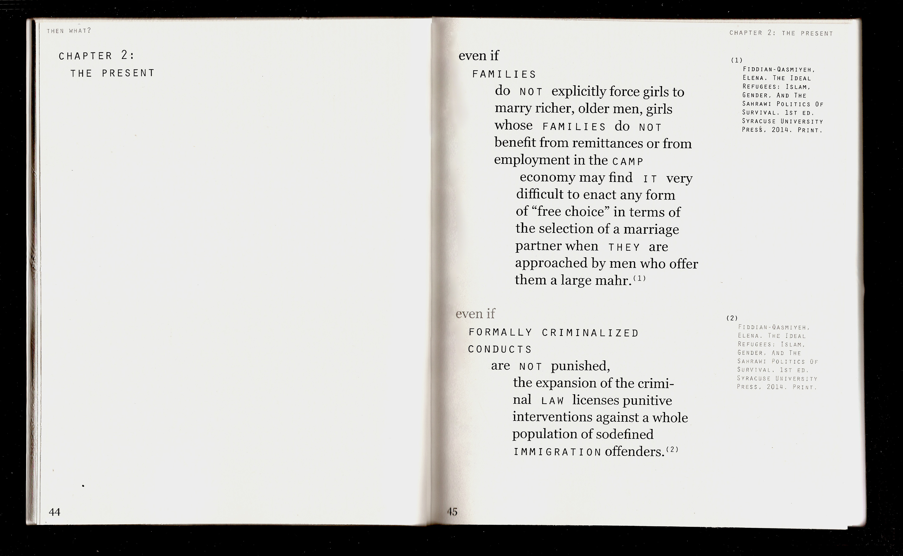
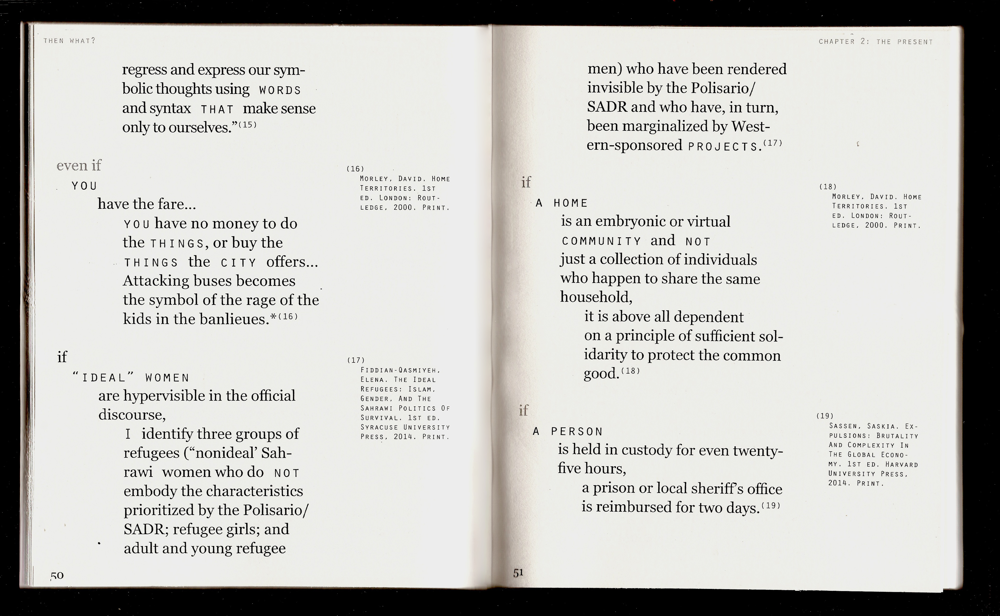
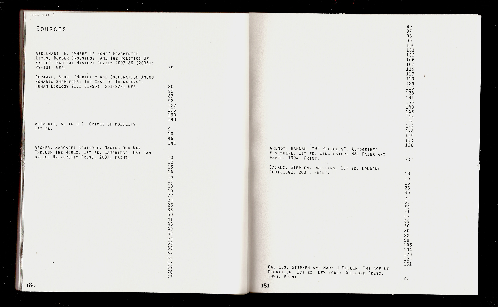
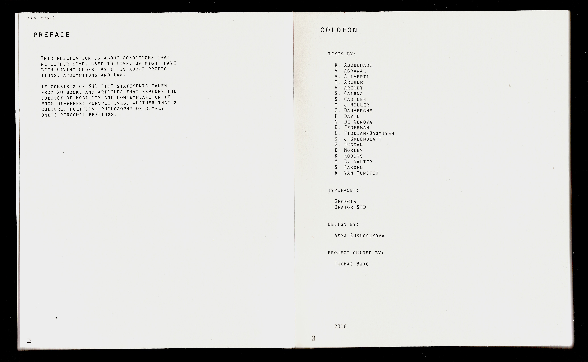
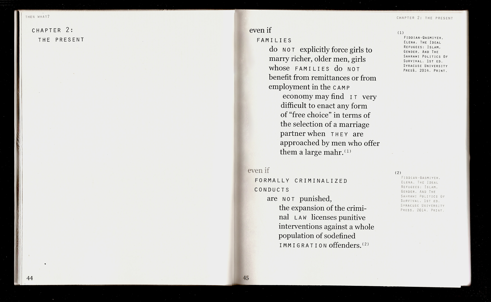
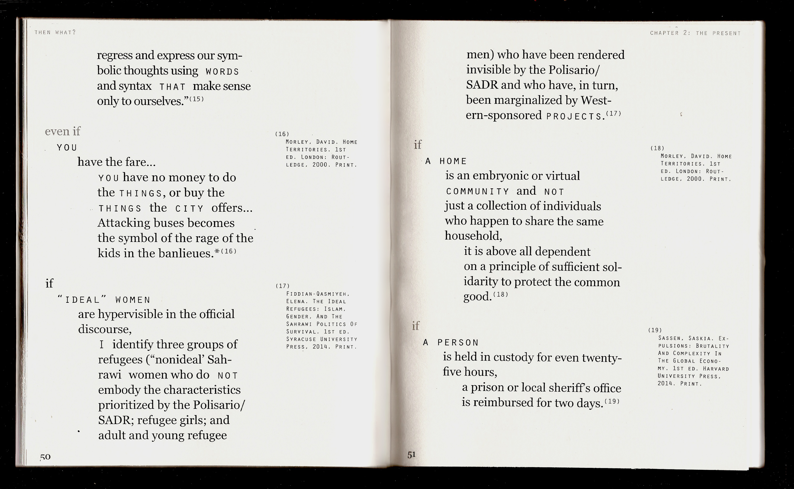
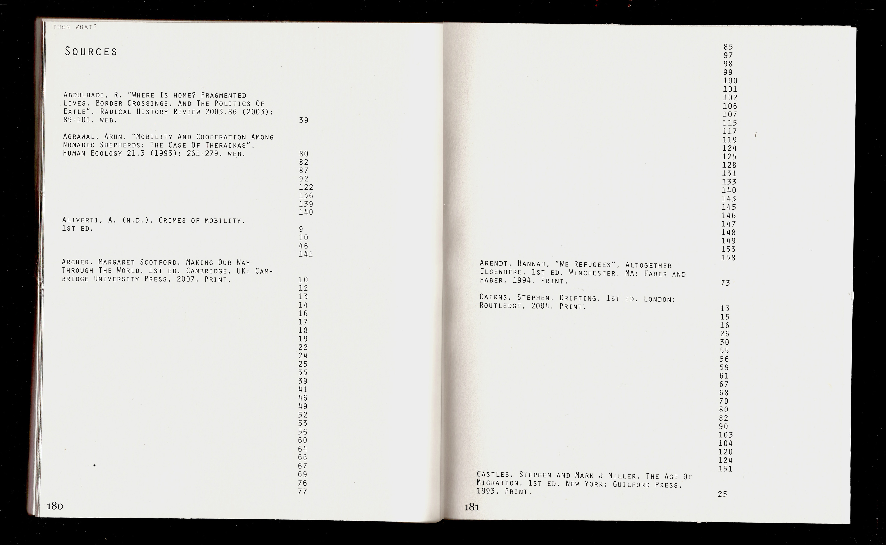

year: 2017
medium: book
paper, digital print
This publication is about conditions that
we either live, used to live, or might have
been living under. As it is about predictions,
assumptions and law.
it consists of 381 “if” statements taken
from 20 books and articles that explore the
subject of mobility and contemplate on it
from different perspectives, whether that’s
culture, politics, philosophy or simply
one’s personal feelings.
 






